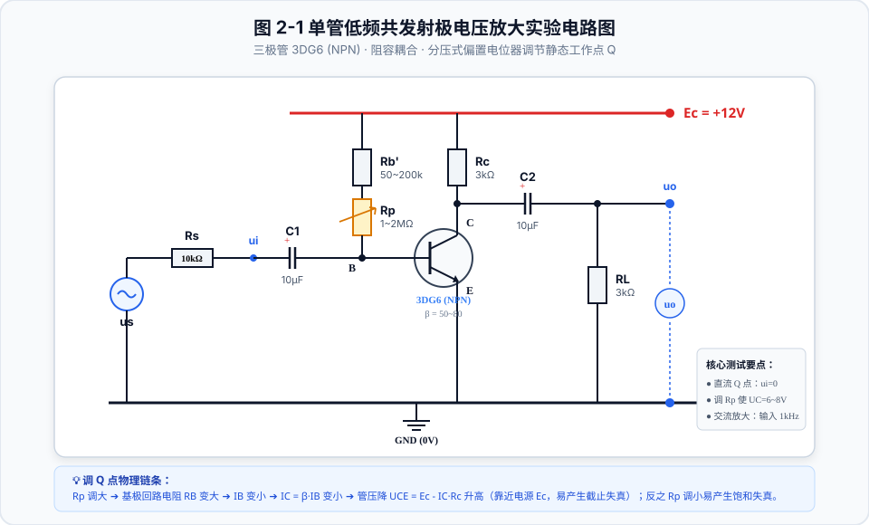
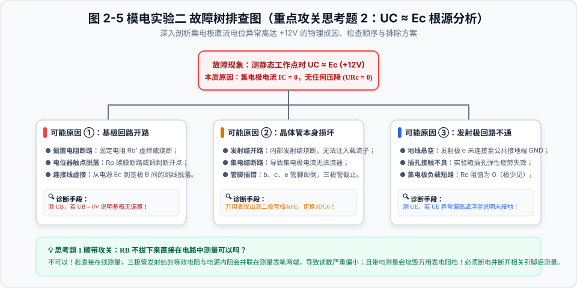

🧭 实验一 综述与系统连接
掌握低频信号发生器、双踪示波器、晶体管交流毫伏表、直流稳压电源的协同工作关系与全系统共地规范。

图 1-1 模拟电子实验常用仪器设备连接系统拓扑图
⚠️ 实验三大红线：
- 全系统共地：所有仪器黑夹子探头必须连接公共 GND！
- 毫伏表操作规范：专测交流，严禁测直流；开机与换档遵守“由大到小”！
- 万用表防烧表：严禁在电阻档下测电压或带电量测！
聚焦模电实验关键知识点：实验一（综合基础与仪器使用）与 实验二（单管低频放大电路与Q点失真分析）
掌握低频信号发生器、双踪示波器、晶体管交流毫伏表、直流稳压电源的协同工作关系与全系统共地规范。


① 清晰且亮度适当：调“辉度”与“聚焦”；② 中央且大小适中：调 Y-POS、X-POS、Volts/div 与 Time/div；③ 完整：调 Time/div 展现 2~3 周期；④ 稳定：调 Trigger Level 旋钮与触发源 SOURCE。
推导不等式：$\frac{U_{I\max} - U_Z}{I_{Z\max} + I_{L\min}} \le R \le \frac{U_{I\min} - U_Z}{I_{Z\min} + I_{L\max}}$。上限保证电网低谷负载最大时不脱离稳压区，下限保证电网高峰负载开路时不烧毁管子。
本电路为经典的**单管阻容耦合共发射极放大电路**。核心三极管为 3DG6（NPN 型，$\beta = 50\sim 80$）。

断开交流输入（$u_i = 0$），将万用表直流电压档接在集电极 $C$ 端，慢慢旋转电位器 $R_p$，使集电极直流电位满足： $U_C = U_{CE} \approx 6.0\text{V} \sim 8.0\text{V}$。 这样可保证交流负载线上下动态摆幅余量对称，获得最大不失真动态范围！


NPN 型共射电路：
• 饱和失真（Q点高，$U_{CE}$过低）：输出波形底部削平（削底）！
• 截止失真（Q点低，$U_{CE}$接近$E_c$）：输出波形顶部削平（削顶）！
若换为 PNP 型共射电路：
• 饱和失真变为：顶部削平（削顶）！
• 截止失真变为：底部削平（削底）！
两者现象正好完全相反倒置！


答：绝不可以！ 若在线测量，三极管发射结的等效电阻与电源内阻会并联在测量表笔两端，导致读数严重偏小；且带电测量会烧毁万用表电阻档！必须断电并断开相关引脚后测量。
答： UC ≈ Ec 说明集电极电流 IC = 0，晶体管完全截止。排查顺序：① 检查基极回路（Rb' 或 Rp 虚焊开路，连接线松脱）；② 检查三极管 3DG6 本身是否烧断损坏；③ 检查发射极 e 是否可靠接公共地 GND。